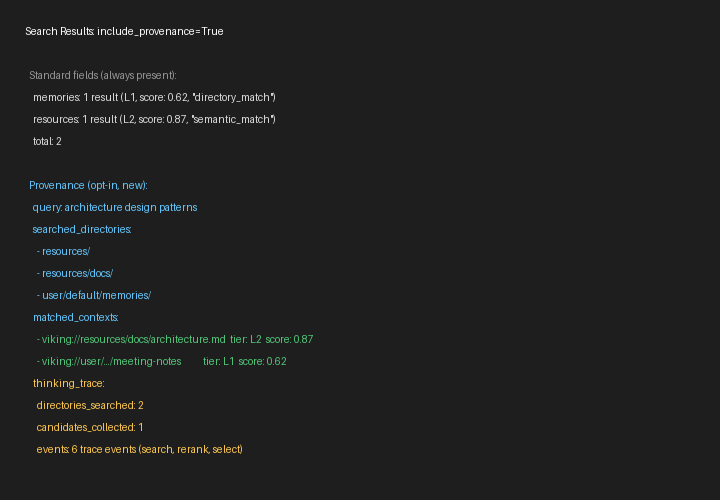

新用户先看什么
保留精益创业视角：适合谁、问题、差异、时机和最小验证。
适合谁
- 正在构建长任务 AI Agent、编码 Agent、研究 Agent 或企业内部助理的团队。
- 需要把文档、代码仓库、用户偏好、工具经验和 Agent 技能长期管理起来的平台工程团队。
- 想研究 context engineering、agentic RAG、记忆生命周期和多租户上下文隔离的技术读者。
解决什么问题
- Agent 上下文常散落在 prompt、向量库、文件、插件和聊天历史里，缺少统一读写与审计边界。
- 传统 RAG 往往是平铺 chunk 检索，难以解释“为什么命中这里”，也难以让 Agent 逐层读取细节。
- 长会话会产生大量可沉淀经验，简单截断或压缩会丢失可复用记忆。
和别的方案哪里不同
- 它把上下文映射到
viking://resources、viking://user/memories、viking://agent/skills等目录，而不是只暴露向量搜索 API。 - 写入后异步生成 L0 摘要、L1 overview 和 L2 原文，检索时先定位目录再递归下钻，并保留 retrieval provenance。
- 项目同时提供 Python SDK、HTTP API、Rust CLI、MCP/WebDAV、Claude Code/OpenClaw/OpenCode 插件、VikingBot 和 Docker/Helm 部署资产。
为什么现在值得看
- Agent 应用从“单次问答”转向长期任务后，上下文治理、记忆复用和检索可观测性会成为工程瓶颈。
- 仓库在 2026-05-06 仍非常活跃，最近提交涉及 memory isolation，说明多用户/多 Agent 场景正在快速演进。
- 它已经把概念文档、API、测试、CI、观测面板、插件示例和发布流程都放进仓库，足够做技术试点评估。
最小验证方式
- 本地或 Docker 启动 server，配置 embedding 与 VLM，先导入一个小型代码仓库或文档目录。
- 用
ov ls/tree/find/grep或 Pythonclient.find()验证viking://目录、L0/L1/L2 和检索命中是否可解释。 - 再接入一个 Claude Code/OpenClaw/OpenCode 低风险会话，验证自动 recall、session commit、memory diff 和隐私边界。
Gold Example / Demo
优先使用真实项目图片或仓库 example；未运行时明确标注静态推演。

docs/images/ov-provenance-example.png 展示 include_provenance=True 时的搜索结果、searched directories、matched contexts 和 thinking trace；它直接对应 OpenViking 的核心卖点：可解释的上下文检索。导入 OpenViking README 后做可解释检索
仓库 `examples/quick_start.py` + README CLI quick start + provenance 示例图；Demo 状态：静态推演，未运行
- 用 Python SDK 或
ov add-resource导入一个 URL、文件或目录，目标落到viking://resources/...。 - ResourceProcessor 解析内容，TreeBuilder 写入 AGFS/RAGFS，SemanticQueue 异步生成
.abstract.md与.overview.md并写入向量索引。 - Agent 用
find做简单语义检索，或用search结合 session context 生成 typed queries。 - 检索结果返回 URI、层级、摘要、相关上下文和可选 provenance，Agent 再按需读取 L1/L2 细节。
项目机制图
图表是可选组件；只在 UML / 系统动力学等表达方式能带来解释增益时使用。
选择理由：OpenViking 的关键机制横跨资源导入、语义队列、向量索引、会话记忆和插件消费；用一次检索任务的 UML 主链路解释执行边界，再用 CLD/SFD 表达上下文积累、信任和风险控制。
场景：Agent 导入一个代码仓库/文档资源，随后在长任务中检索相关上下文并把会话经验沉淀为记忆。
参考 docs/reference/image.md 的思路：中心是一次任务执行，外圈只保留有解释增益的动力回路。
先看任务执行步骤，再看哪些反馈回路会改变长期采用、风险或上下文存量。
add_resource 或 add_skill
入口可以是 SDK、HTTP、Rust CLI 或插件解析文件/URL/目录并写入 viking://
提交 L0/L1 生成任务
bottom-up 生成摘要和 overviewembedding + metadata records
索引保存 URI、向量和摘要，不保存完整文件内容find/search 查询
search 可结合 session context 做 intent analysis
目录定位 + 递归下钻 + rerank
返回 matched contexts、relations 和可选 provenancecommit 后抽取长期记忆
异步写入 user/agent memory 并记录 memory diff统一导入资源/记忆/技能 -> L0/L1/L2 可导航 -> 检索结果更可解释 -> Agent 任务成功率提高 -> 更多上下文被沉淀
上下文变敏感 -> 多租户/密钥/隐私风险上升 -> 启用鉴权/加密/审计 -> 部署边界收紧
导入文档/会话/技能 -> 检索与读取 -> L0/L1/L2 上下文库存 -> 过期、删除或再索引
主流程图把一次典型任务拆成角色、协议/数据转换和关键交接点。
add_resource 或 add_skill
入口可以是 SDK、HTTP、Rust CLI 或插件解析文件/URL/目录并写入 viking://
提交 L0/L1 生成任务
bottom-up 生成摘要和 overviewembedding + metadata records
索引保存 URI、向量和摘要，不保存完整文件内容find/search 查询
search 可结合 session context 做 intent analysis
目录定位 + 递归下钻 + rerank
返回 matched contexts、relations 和可选 provenancecommit 后抽取长期记忆
异步写入 user/agent memory 并记录 memory diff组件图强调核心契约：哪个模块承接输入，哪些模块围绕它提供数据、适配或规则。
统一暴露资源、文件系统、检索、会话、隐私和管理 API。
FS/Search/Resource/Session/Pack/Debug 等业务服务复用同一 VikingFS。
把文档、代码、媒体、URL 和目录转成 viking:// 层级树。
异步生成 L0/L1，控制 VLM/embedding 并发并写入索引。
URI 规范、读写、关系、访问控制、加密透明化和向量同步的核心边界。
内容存储和语义索引分离，支持 local/S3/memory 与 local/http/VikingDB。
find/search 的语义召回、typed queries、递归检索和 rerank。
Claude Code、OpenClaw、OpenCode、MCP、VikingBot 等消费同一上下文能力。
系统动力学图只在反馈、存量或趋势能解释项目机制时使用。
统一导入资源/记忆/技能 -> L0/L1/L2 可导航 -> 检索结果更可解释 -> Agent 任务成功率提高 -> 更多上下文被沉淀
上下文变敏感 -> 多租户/密钥/隐私风险上升 -> 启用鉴权/加密/审计 -> 部署边界收紧
导入文档/会话/技能 -> 检索与读取 -> L0/L1/L2 上下文库存 -> 过期、删除或再索引
%% 主流程 / sequence
sequenceDiagram
autonumber
participant P1 as Agent / CLI / Plugin
participant P2 as ResourceService
participant P3 as Parser + TreeBuilder
participant P4 as SemanticQueue
participant P5 as Vector Index
participant P6 as SearchService + VikingFS
participant P7 as HierarchicalRetriever
participant P8 as SessionService
participant P9 as Memory Extractor
P1->>P2: add_resource 或 add_skill
Note over P2: 入口可以是 SDK、HTTP、Rust CLI 或插件
P2->>P3: 解析文件/URL/目录并写入 `viking://`
Note over P3: Parser 不直接调用 LLM，先建立目录树
P3->>P4: 提交 L0/L1 生成任务
Note over P4: bottom-up 生成摘要和 overview
P4->>P5: embedding + metadata records
Note over P5: 索引保存 URI、向量和摘要，不保存完整文件内容
P1->>P6: find/search 查询
Note over P6: `search` 可结合 session context 做 intent analysis
P6->>P7: 目录定位 + 递归下钻 + rerank
Note over P7: 返回 matched contexts、relations 和可选 provenance
P8->>P9: commit 后抽取长期记忆
Note over P9: 异步写入 user/agent memory 并记录 memory diff
---
%% 组件关系 / component
flowchart LR
N1[FastAPI / SDK / Rust CLI<br/>统一暴露资源、文件系统、检索、会话、隐私和管理 API。]
N2[Service Layer<br/>FS/Search/Resource/Session/Pack/Debug 等业务服务复用同一 VikingFS。]
N1 --> N2
N3[Parser + TreeBuilder<br/>把文档、代码、媒体、URL 和目录转成 `viking://` 层级树。]
N2 --> N3
N4[SemanticQueue<br/>异步生成 L0/L1，控制 VLM/embedding 并发并写入索引。]
N3 --> N4
N5[VikingFS<br/>URI 规范、读写、关系、访问控制、加密透明化和向量同步的核心边界。]
N4 --> N5
N6[RAGFS + VectorDB<br/>内容存储和语义索引分离，支持 local/S3/memory 与 local/http/VikingDB。]
N5 --> N6
N7[Retriever + IntentAnalyzer<br/>find/search 的语义召回、typed queries、递归检索和 rerank。]
N6 --> N7
N8[Agent Integrations<br/>Claude Code、OpenClaw、OpenCode、MCP、VikingBot 等消费同一上下文能力。]
N7 --> N8
---
%% 系统动力学 / CLD-SFD-BOT
R 上下文质量增强回路: 统一导入资源/记忆/技能 -> L0/L1/L2 可导航 -> 检索结果更可解释 -> Agent 任务成功率提高 -> 更多上下文被沉淀
B 生产采用约束回路: 上下文变敏感 -> 多租户/密钥/隐私风险上升 -> 启用鉴权/加密/审计 -> 部署边界收紧
SFD 上下文库存量: 导入文档/会话/技能 -> 检索与读取 -> L0/L1/L2 上下文库存 -> 过期、删除或再索引
---
%% 混合图说明
中心使用一次任务/请求执行骨架；外圈只叠加有解释增益的 CLD/SFD/BOT 回路。4+1 裁剪的上下文数据库架构视角
先判断复杂度，再裁剪 C4 / 4+1 / UML 组合；核心业务交互图必须优先。
4+1 裁剪的上下文数据库架构视角
1. 系统全貌
OpenViking 位于 Agent runtime 与模型/存储基础设施之间，向 CLI、SDK、HTTP、MCP、WebDAV 和插件提供同一套上下文数据库能力。
上图由架构视角的 Mermaid flowchart 源码静态渲染，源码保留在下方。
结构依赖 / 数据流向
结构依赖 / 数据流向
结构依赖 / 数据流向
结构依赖 / 数据流向
结构依赖 / 数据流向
结构依赖 / 数据流向
结构依赖 / 数据流向
Mermaid 源码
flowchart LR
Agent[Agent Runtime / Developer] --> SDK[Python SDK / Rust CLI / Plugins]
SDK --> API[OpenViking HTTP API or Embedded Client]
API --> Service[OpenViking Service Layer]
Service --> Model[VLM / Embedding / Rerank Providers]
Service --> Storage[RAGFS Content Store + Vector Index]
Service --> Obs[Observer / Metrics / Grafana]
Service --> Admin[Auth / Multi-tenant / Privacy / Encryption]2. 核心业务流转
场景描述：导入资源后，Agent 在一次任务中检索上下文并在 commit 时沉淀长期记忆。
这个视图展示最关键的行为链：资源写入先形成层级目录，再异步生成语义层；检索时先定位目录，再递归下钻；会话 commit 另走记忆抽取链路。
上图由架构视角的 Mermaid sequenceDiagram 源码静态渲染，源码保留在下方。
add_resource(URL/file/directory)
parse and build viking:// tree
enqueue L0/L1 generation
write abstracts, overviews, vectors
find/search query
typed query + target scopes
global search then recursive directory search
matched contexts + URI + provenance
session.commit()
write user/agent memories and memory_diff
Mermaid 源码
sequenceDiagram
autonumber
participant A as Agent or CLI
participant R as ResourceService
participant P as Parser and TreeBuilder
participant Q as SemanticQueue
participant V as VikingFS and Vector Index
participant S as SearchService
participant H as HierarchicalRetriever
participant M as Session Memory Extractor
A->>R: add_resource(URL/file/directory)
R->>P: parse and build viking:// tree
P->>Q: enqueue L0/L1 generation
Q->>V: write abstracts, overviews, vectors
A->>S: find/search query
S->>H: typed query + target scopes
H->>V: global search then recursive directory search
V-->>A: matched contexts + URI + provenance
A->>M: session.commit()
M->>V: write user/agent memories and memory_diff3. 静态组织结构
源码组织显示这是一个多语言系统：Python 负责服务和业务层，Rust 负责 CLI/RAGFS，C++ 扩展承担底层索引/能力探测，Bot 和插件负责上层集成。
上图由架构视角的 Mermaid flowchart 源码静态渲染，源码保留在下方。
结构依赖 / 数据流向
结构依赖 / 数据流向
结构依赖 / 数据流向
结构依赖 / 数据流向
结构依赖 / 数据流向
结构依赖 / 数据流向
结构依赖 / 数据流向
结构依赖 / 数据流向
结构依赖 / 数据流向
结构依赖 / 数据流向
Mermaid 源码
flowchart LR
subgraph Python[Python package]
Server[openviking/server routers]
Services[openviking/service]
Parse[openviking/parse]
Retrieve[openviking/retrieve]
Storage[openviking/storage]
Session[openviking/session]
end
subgraph Rust[Rust workspace]
OvCli[crates/ov_cli]
Ragfs[crates/ragfs]
RagfsPy[crates/ragfs-python]
end
subgraph Native[Native extensions]
Cpp[src C++ extensions]
end
subgraph Integrations[Integrations]
Examples[examples plugins]
Bot[VikingBot]
Docs[docs and console]
end
Server --> Services
Services --> Parse
Services --> Retrieve
Services --> Storage
Storage --> RagfsPy
RagfsPy --> Ragfs
OvCli --> Server
Bot --> Server
Examples --> Server
Cpp --> Storage4. 部署与运行边界
仓库同时支持 embedded mode、独立 HTTP server、Docker compose、Docker image、Helm 示例和带 VikingBot 的 server；生产关键在模型服务、持久化、密钥和多租户隔离。
上图由架构视角的 Mermaid flowchart 源码静态渲染，源码保留在下方。
结构依赖 / 数据流向
结构依赖 / 数据流向
结构依赖 / 数据流向
结构依赖 / 数据流向
结构依赖 / 数据流向
结构依赖 / 数据流向
结构依赖 / 数据流向
结构依赖 / 数据流向
结构依赖 / 数据流向
结构依赖 / 数据流向
Mermaid 源码
flowchart LR
Local[Embedded Python Process] --> Workspace[Local ~/.openviking workspace]
Client[SDK / CLI / Plugin] --> Server[openviking-server :1933]
Server --> Console[Console UI :8020]
Server --> Bot[VikingBot optional /chat]
Server --> FS[LocalFS or S3 AGFS]
Server --> VDB[Local/http/Volcengine VectorDB]
Server --> Model[Embedding/VLM/Rerank APIs]
Server --> KMS[Local key / Vault / Volcengine KMS]
Docker[Docker Compose / Image] --> Server
Helm[K8s Helm example] --> Server核心资产与价值
只保留新用户和技术评估者需要理解的关键资产。
`viking://` URI 与目录语义
Context types、Viking URI、FS API 和 namespace 规则让 Agent 像操作文件一样操作上下文。
L0/L1/L2 分层处理链
Parser、TreeBuilder、SemanticQueue 和 .abstract.md/.overview.md 机制把检索、导航和细读拆开。
HierarchicalRetriever
全局定位、目录递归、score propagation、rerank fallback 和 relations 是区别于平铺 RAG 的核心算法资产。
Session memory lifecycle
commit、archive、memory extraction、dedup decision 和 memory_diff 让会话经验可审计地沉淀。
部署与集成资产
Rust CLI、HTTP API、MCP/WebDAV、Claude Code/OpenClaw/OpenCode 插件、VikingBot、Docker/Helm 降低试点门槛。
安全与治理资产
multi-tenant identity、API key roles、privacy config、envelope encryption、metrics/observer 支撑生产化讨论。
采用前确认与证据边界
风险和工程化信息只保留会影响试用/采用决策的部分。
采用前确认
- 先把试点范围限定在非敏感仓库或文档，确认导入、分层摘要、检索结果和 provenance 是否符合团队调试习惯。
- 确认 AGPL-3.0 对服务化部署和二次修改的合规影响；Rust crates/examples 的 Apache-2.0 不能覆盖主项目许可证。
- 压测模型调用成本与延迟，尤其是 VLM 摘要、embedding、rerank、长会话 commit 和批量资源导入。
- 生产部署必须配置 root/user key、account/user/agent 边界、加密 provider、日志脱敏、备份和再索引策略。
- 把插件接入低风险 Agent 后再逐步扩大，不要直接把个人/客户长期记忆导入未审计的共享实例。
DeepWiki / 证据边界
- 外部阅读入口按 GitHub URL 派生：DeepWiki https://deepwiki.com/volcengine/OpenViking，Zread https://zread.ai/volcengine/OpenViking。
- 本报告的判断主要来自本地克隆源码、README/docs、CI、license 和 GitHub API；未把第三方总结当作事实来源。
- README 定位为面向 AI Agents 的 Context Database，列出 filesystem paradigm、tiered loading、directory recursive retrieval、visualized trajectory、automatic session management。
docs/en/concepts/01-architecture.md描述 Client、Service、Retrieve、Session、Parse、Compressor、Storage 与 AGFS + Vector Index。openviking/service/core.py初始化 RAGFS、QueueManager、VikingDBManager、VikingFS、processors、SessionCompressor、WatchScheduler 和各 service。openviking/retrieve/hierarchical_retriever.py实现全局向量定位、目录递归、score propagation、rerank fallback 和 relation 读取。pyproject.toml声明 Python 3.10+、FastAPI、OpenTelemetry、tree-sitter、mcp、model provider 依赖和ov/openviking-server/vikingbotscripts。- 未安装依赖、未启动 server、未运行
ov、未调用模型服务；性能、召回质量和部署稳定性均为证据边界之外。